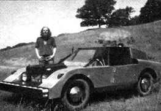

My vehicle's features include a recycled VW beetle chassis, a shock-absorbing bumper and a body of aluminum panels pop-riveted onto an angle-iron roll-cage frame. Because of its lighter weight and lower wind resistance, the Earthrover wears longer and stops, goes and corners better than it did as a VW. It drives through the woods on jeep and dune buggy trails much more efficiently than an ordinary auto.
Unlike those of the vehicles shown in the poster, a body like the Earthrover's can be constructed and repaired easily because it doesn't have expensive establishment styling, tricky hardware or curved glass.
Apart from that objection, though, I think MOTHER's electric car idea is right on. I feel that a light vehicle with two or more electric motors and several batteries can run much better than the majority of consumers are being led to believe. Alternative vehicle seminars and meets-organized and publicized through national magazines like MOTHER-might enable the people to develop a simple, reliable form of transportation that could be produced, driven and maintained without ruining our planet.
|
 |
|
|